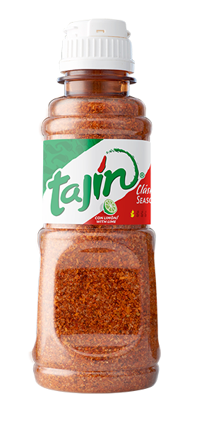
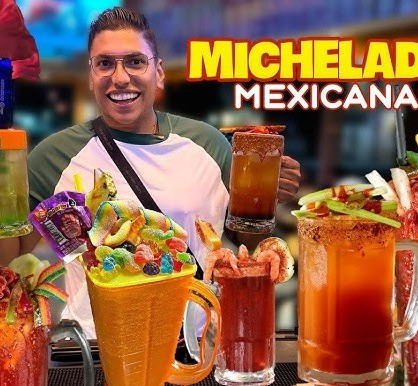
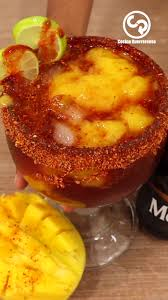
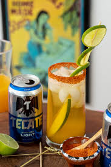
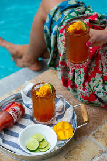

Sou colombiano, tenho 27 anos, sou estudante da FEI e estou cursando Ciência da Computação.
Gosto de praticar esportes, gosto de tocar instrumentos como bateria e teclado, e também gosto de jogar videogames.
Como também gosto de preparar bebidas, vou te ensinar a fazer uma Michelada de Manga uma bebida de origem mexicana que vai te refrescar naqueles dias calurosos

Tempero Tajín

Vicente provando bebidas mexicanas
Maria fazendo michelada

Michelada top!

Cerveja 100% mexicana

Maria bebendo michelada
Quer preparar outros tipos de michelada de manga? Confira nossas receitas. É só clicar!
Michelada tradicional Michelada com soda Michelada com molho soja Michelada com camarãoNestes restaurantes mexicanos, você poderá experimentar uma excelente comida mexicana acompanhada de uma deliciosa michelada de manga
Escolha o mais perto de você!
Ficou curioso para saber o que tem em um restaurante mexicano em São Paulo? Então assista o vídeo abaixo. Cuidado para não ficar com água na boca!